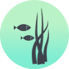

The Planted Aquarium
A GUIDE TO THE PLANTED AQUARIUM
Welcome to the next step up in having an aquarium, the planted aquarium.
"But wait.... I have had plants in my tank before?" Yes most people have,
but a planted aquarium attempts to mimic a natural environment.
If
you already believe you have a strong knowledge of planted tanks and how
everything works, feel free to check out the more advanced techniques of
aqua scaping in this guide:An Advanced Guide to Aquascaping
Creating a planted tank helps you to understand the chemistry within
the water that allows the plants to grow and flourish if presented with
the right environment. There are hundreds of types of plants that encompass
different requirements, colours and sizes.

Steps to starting your planted Aquarium
Decide what type of plants you want in the tank. It is usually
a good idea to stick with one central theme e.g. Stem plants, Anubais
, Java Ferns and crypts. These are among the major types, moss is another plant
that will grow in almost all conditions; it makes a fine addition to any planted
aquarium.
Examples of Common Plants

Stem Plants
- Stem plants will fill the back of
the tank nicely and can be shaped very stemseasily through trimming.
The trimmed stems can then be propagated into the substrate and grown
again, meaning soon your tank will be full of lush plants. Try to avoid
some plants like hygro and red coloured plants. Hygro will grow nicely but
as it gets lager and stems become closer its lower leaves will drop off and
pollute the tank. Red plants need very high lighting and should be avoided.

Anubais & Ferns
- Anubais and java ferns ARE NOT placed
in the substrate, they are plants that feed directly on the water column and
if placed into the gravel they will die. They grow quite slow but they look
very nice if attached to driftwood or a rock.

Potted Plants
-
Crypts and potted plants can be placed in the gravel and they are attractive
looking plants, because they are usually easy to keep they are incredibly popular
and also fairly affordable; crypts are a good starter plant.

Moss
- Moss will grow fast or slow and display different structures depending
on nutrients and lighting but is a great looking plant and perfect for
the beginner. Java moss and Christmas are among two of
the most abundant, only a little bit is needed to grow a whole
lot more.

Hair Grass
- Hair grass is a great looking plant that looks like underwater grass, why
not have paddocks in your aquarium?
When the types of plants you are using have been decided we must think
about what requirements the plants need to grow, a nutrient rich substrate
will work but in this case is not entirely necessary.